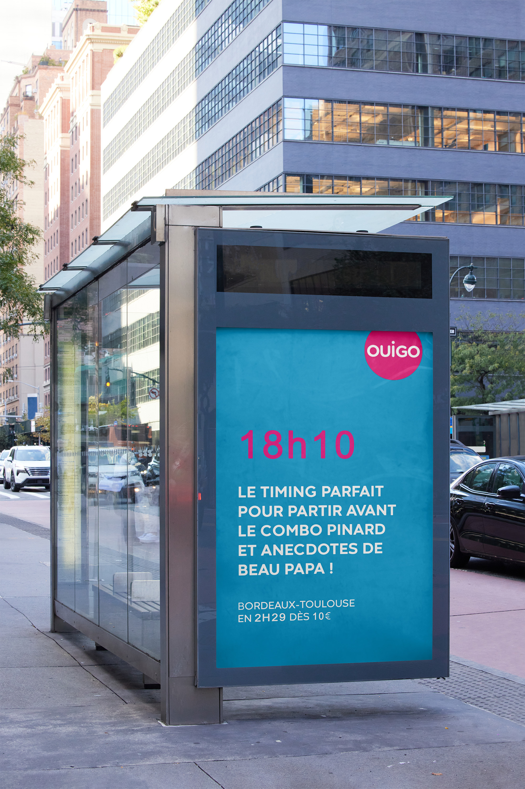

Projects > The Perfect Timing
The Perfect Timing
Recommendation for Ouigo - Award-winning campaign

Context & Objectives
OUIGO gave us a clear brief: how can we make end-of-line train stops more appealing for travelers—especially young people and families—when they’re up against flexible alternatives like cars, rideshares, and planes? Even though trains are an obvious alternative for longer distances, they suffer from a perception of inflexibility and inconvenience—especially for trips between 100 and 300 km, which are the most common in France. A study revealed that 75% of non-train users prefer other transport options, even when trains could be viable. Why? Price, convenience (timing, transfers, punctuality, etc.).

Strategy & Insight
One of the key insights we identified was scheduling. Travelers often express the need for more flexibility: 'I want to leave when I want, at a time that suits me,' or 'The schedule doesn't work for me.' These concerns lead many to choose more flexible modes of transport. We found that young people aged 18–34 are more willing to adapt to fixed schedules, unlike those over 50, who find them restrictive. It's this perceived flexibility of other transport options that often drives them to choose alternatives, even if they’re more expensive and polluting—two major concerns for our young target audience.
Creative Solution
To tackle the perception of fixed schedules being a limitation, we flipped the narrative and turned it into a strength. Rather than seeing the schedule as a restriction, we presented it as a smart and convenient choice. A non-refundable, non-exchangeable ticket becomes the perfect excuse to gracefully exit awkward situations—like a never-ending family meal or a clingy friend who won’t take the hint. For instance: Sunday at 2:52 PM? You’re already on your OUIGO train while others are still stuck at the table. Thursday at 2:39 PM? While your friend pesters you to go out, you’re already on your way—leaving them behind with unanswered texts.

One of the main advantages of fixed schedules is their simplicity. A single time per day is easier to
remember, which makes it a strategic advantage for our target audience. We therefore highlighted
this simplicity and ease of memorization, showing that these schedules are not only practical but
also strategic.
To get this message across, we created short, punchy, humorous, and offbeat
content on digital platforms like TikTok, Reels, and Instagram Stories—perfectly suited to capturing
the attention of our audience.
But we didn’t stop there. We also decided to hack the system by making these schedules unmissable. By
altering public clocks—whether in train stations or public squares—to display OUIGO departure times,
we made these times visible and omnipresent. We also added pavement tags, directly on the sidewalks,
so that every young person in the city knows exactly when the OUIGO train departs. It was no longer
just a time printed on a ticket—it became a moment that everyone knows and remembers.
The best
part? This campaign is scalable to every part of the line. The goal is to change how fixed schedules
are perceived and to make OUIGO the go-to choice for young travelers looking for a practical and
affordable alternative.




Team
Léa SALAÜN, Maëlle Marcuzzi, Inès Pontiggia, Antoine Colin, Capucine Delaplace, Tiphaine Jeannot
Sources
The French and the train: their expectations, preferences, and critiques:
View the article on IFOP's website
Download the PDF study